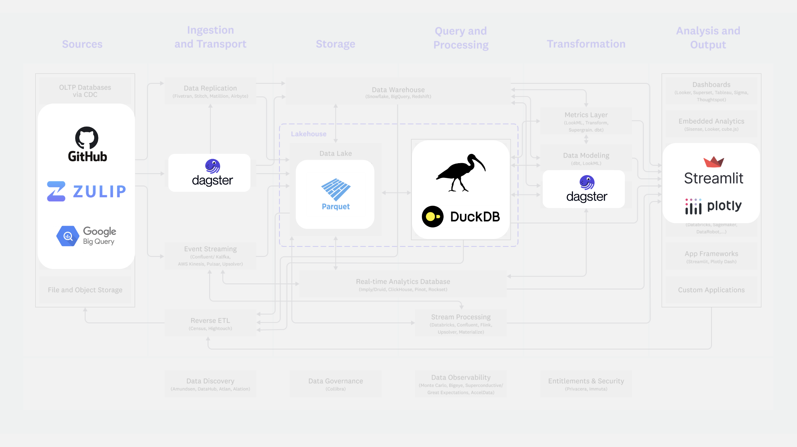

Modern, open and downward-scaleable data engineering
Getting started with the composable data stack
![]()
September 8, 2024
Attribution & copyright notice
This lecture is based on the following open access materials:
- Voltron Data, The Composable Codex
- Cody Peterson, Modern, hybrid, open analytics
- Thierry Jean, Portable dataflows with Ibis and Hamilton
- Documentation of the following Python libraries: DuckDB, Ibis, hamilton, polars, Shiny for Python
Source code: https://github.com/anthology-of-data-science/lecture-composable-data-stack
Daniel Kapitan, Modern, open and downward-scaleable data engineering.
This work is licensed under CC BY-SA 4.0


Learning objectives
Understand the problem
- how data platforms evolved in the past couple of decades
- current problems with data platforms
- what concepts underlie the composable data stack
- what concepts underlie modern data engineering workflows
Know how to
- Build end-to-end data pipeline using open source implementations of the composable data stack
- Apply best practices of functional data engineering
- Apply the split-apply-combine strategy with various syntaxes
Reflect
- on how this impact your (future) work as a data engineer
- on the pro’s and con’s of open standards and open source
Understand the problem
The problem
The ML/AI/Data (MAD) Landscape
The Composable Data Management System Manifesto
The requirement for specialization in data management systems has evolved faster than our software development practices. After decades of organic growth, this situation has created a siloed landscape composed of hundreds of products developed and maintained as monoliths, with limited reuse between systems. This fragmentation has resulted in developers often reinventing the wheel, increased maintenance costs, and slowed down innovation. It has also affected the end users, who are often required to learn the idiosyncrasies of dozens of incompatible SQL and non-SQL API dialects, and settle for systems with incomplete functionality and inconsistent semantics.
Pedreira, Pedro, et al. The composable data management system manifesto. Proceedings of the VLDB Endowment 16.10 (2023): 2679-2685.
Let’s start at the beginning
Edgar Codd invents relational algebra (1970)
E. F. Codd. A relational model of data for large shared data banks. Commun. ACM 13, 6 (June 1970), 377–387.
Standard Query Language (SQL)
Still the most important language for a data engineer
Source: Jadwiga Wilkens on Medium. The Best BigQuery SQL Cheat Sheet for Beginners.
Evolution of data platfom architectures
Armbrust, Michael, et al. Lakehouse: a new generation of open platforms that unify data warehousing and advanced analytics. Proceedings of CIDR. Vol. 8. 2021.
Towards a data-centric future
| NOW: Application-Centric | FUTURE: Data-Centric |
|---|---|
| Exorbitant, often prohibitive, cost of change. Reasonable cost of change. | Data is tied up in applications because applications own data. Data is an open resource that outlives any given application. |
| Every new project comes with a big data conversion project. | Every new project taps into existing data stores. |
| Data exists in wide variety of heterogeneous formats, structures, meaning, and terminology. | Data is globally integrated sharing a common meaning, being exported from a common source into any needed format. |
| Data integration consumes 35%-65% of IT budget. | Data integration will be nearly free. |
| Hard or impossible to integrate external data with internal data. | Internal and external data readily integrated. |
Understand open standards for data platforms
Decomposing the venerable relational database management system (RDBMS)

Source: Basil Borque on Stackoverflow
Decomposing the database into open standards
Arrow: from row-based to column-based tables
Columnar is faster for analytical processing
Source: Apache Arrow overview.
Standardization saves time and resources
No costly serialization/deserialization, no custom implementations


Source: Apache Arrow overview.
JDBC/ODBC: row-based database connectivity protocols
Less suitable for analytical workloads
Source: Apache Arrow: Introducing ADBC.
Arrow Database Connectivity (ADBC)
A single API for getting Arrow data in and out of different databases
Source: Apache Arrow: Introducing ADBC.
Iceberg: an open table format and catalog
Basically, a database engine in files

Source: Apache Iceberg specification.
Iceberg catalog
We still need a (small) database
Iceberg metadata file
Stores schema, partition information and snapshots
Iceberg manifest list
Stores information about each manifest file that makes up a snapshot
Iceberg manifest file
Track data files as well as additional details and statistics about each file

Iceberg in practice
Creating a table
Iceberg in practice
Result of creating a table
Iceberg in practice
Inserting data
Iceberg in practice
Result of inserting data
Iceberg in practice
Merge into/upserting data
Iceberg in practice
Result of merging into/upserting data
Iceberg in practice
Merge into/upserting data
Iceberg in practice
Result of select statement
Understand the composable data stack
The Data Science Hierachy of Needs
All you need is MICE

The Composable Data Stack
Layers
The Composable Data Stack
Standards
The Composable Data Stack
Subtstrait for Intermediate Representation (IR)
The Composable Data Stack
Arrow for connectivity and data memory layout
Big Data Is Dead
Source: Jordan Tigani, Big Data Is Dead.
You can work with 100s GB of data on a single machine
All you need is a PC and some open source libraries
Source: The Data Quarry::blog Embedded databases (1): The harmony of DuckDB, KùzuDB and LanceDB.
Know How To
From components to a whole platform architecture
Source: Andreessen Horowitz, Emerging Architectures for Modern Data Infrastructure.
The Composable Data Stack in Practice
Let’s get into building an end-to-end stack
The Pipeline Pattern
Directed Acyclyc Graphs, ETL/ELT and functional data engineering
Source: Hamilton.
Dagster
Software-Defined Assets
Source: Dagster Introducing Software-Defined Assets.
Walk-through end-to-end pipeline
Points of interest
- Overall structure of the project
- Managing your workflow:
just - Writing pipelines: functions, functions, functions
- Inspecting your DAG with Dagster
- Materializing assets
- Dashboard
The split-apply-combine strategy for data analysis
Wickham, H. (2011). The Split-Apply-Combine Strategy for Data Analysis. Journal of Statistical Software, 40(1), 1–29. https://doi.org/10.18637/jss.v040.i01
The split-apply-combine strategy for data analysis
Overview data transformations in different libraries
| concept | pandas | polars | ibis | PySpark | dplyr | SQL |
|---|---|---|---|---|---|---|
| split | groupby() | group_by() | group_by() | groupBy() | group_by() | GROUP BY |
| combine | join (), merge() | join() | left_join, inner_join() etc. | join() | left_join, inner_join() etc. | LEFT JOIN, JOIN etc. |
| filtering (row based) | loc[], query() | filter() | filter() | filter() | filter() | WHERE |
| select (column based) | loc[], iloc[], | select() | select() | select() | select() | SELECT |
| mutate | assign() | with_columns() | mutuate() | withColumn() | mutate() | ADD |
| ordering | sort_values() | sort() | order_by() | orderBy() | arrange() | ORDER BY |
Method chaining
Using functions the bad way
tumble_after(
broke(
fell_down(
fetch(went_up(jack_jill, "hill"), "water"),
jack),
"crown"),
"jill"
)… vs. the more readable way
(jack_jill
.went_up("hill")
.fetch("water")
.fell_down("jack")
.broke("crown")
.tumble_after("jill")Source: Tom’s (Augspurger) Blog. Method Chaining.
Naming of table hierarchy differs across backends
Ibis uses catalog –> database –> table
| Backend | Catalog | Database |
|---|---|---|
| bigquery | project | database |
| clickhouse | database | |
| datafusion | catalog | schema |
| druid | dataSourceType | dataSource |
| duckdb | database | schema |
| flink | catalog | database |
| impala | database | |
| mssql | database | schema |
| mysql | database | |
| postgres | database | schema |
| pyspark | database | |
| snowflake | database | |
| trino | catalog | schema |
Source: Ibis documentation.
Working with nested data
Gotcha! Unforunately there is no standard naming yet …
| operation | ibis | polars | duckdb |
|---|---|---|---|
Flatten Array into multiple rows |
ArrayValue.unnest() |
DataFrame.explode() |
UNNEST |
Unnest Struct into multiple columns |
Table.unpack(*columns) |
DataFrame.unnest() |
UNNEST |
Ibis also has methods that operate directly on a column of structs:
You can swap components to your hearts content
My personal preferences
| component | Ibis analytics demo | My preference |
|---|---|---|
| Workflow orchestration | Dagster | Hamilton |
| Persistent storage | parquet, native DuckDB files | Apache Iceberg |
| Dashboarding app | Streamlit | Shiny for Python, Quarto |
| Visualization | plotly | vega-altair |
Stuff we haven’t covered yet
…and will definitely give you a headache in future projects
- Change Data Capture (CDC): determine and track data that has changed at the source, such that you only have to process the ‘deltas’
- Setup and manage access control mechanisms in an operational data platform
- Provide documentation for non-technical users
- Reporting on data quality